几何画板基础入门教程
作者：TeliuTe 来源：基础教程网
三、圆和圆弧 返回目录 下一课圆是由圆心和绕圆心的点组成，圆弧是圆上的一段；
1、画圆工具
1）在左边工具栏，选择画圆工具；
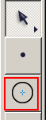
2）在工作区中拖动鼠标，就可以画出一个圆，包括圆心和圆上的一个点，拖动点可以改变圆的大小；
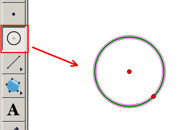
3）要想移动圆，用选择工具，拖动圆的边框即可；
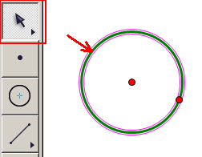
2、根据圆心和半径画圆
1）选择“线段工具”，在工作区里画一条线段，它将作为半径长度；
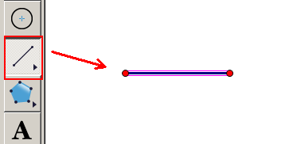
2）线段上有两个端点，我们用选择工具选中一个，它将作为圆心；
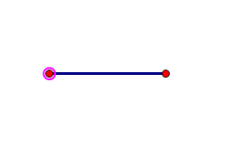
3）再点一下线段，把线段选中，注意：连续点击，可以同时选中，不想连续选的话先在空白处点击；
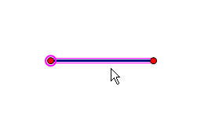
4）点菜单“构造 - 以圆心和半径作圆”，就可以画出一个圆来；
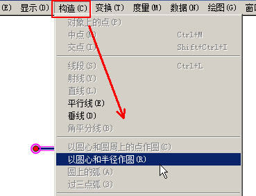
5）这时就可以得到一个圆，一个点是圆心，线段是一条半径，保存一下文件；
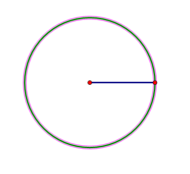
3、圆弧
1）圆弧需要两个点，和两点之间的一段圆，
点选择工具，在空白处点一下取消选择，再点击圆边线，选中圆；
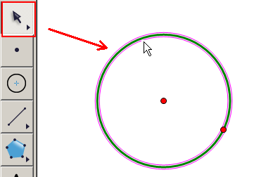
2）点菜单“构造 - 圆上的点”，圆上就会多出一个点，用选择工具，移到合适的位置；
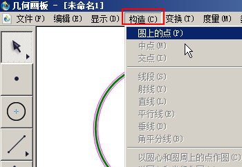
3）同样再点空白处、再选中圆，再点菜单“构造 - 圆上的点”，构造出第二个点，移到合适位置；
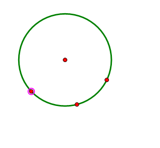
4）依次选择“点 - 弧 -点”，按逆时针选取，先选一个点，在弧的逆时针的起点位置，再选弧，逆时针选最后的第二个点；
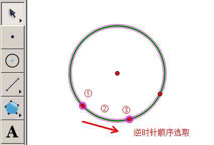
5）点菜单“构造 - 圆上的弧”；
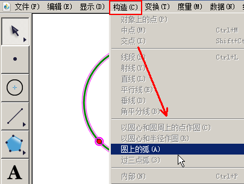
6）这时就会显示一段实线的圆弧，圆变成了虚线；
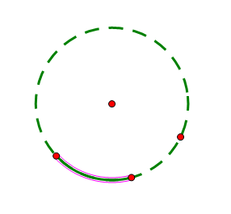
本节学习了的基础知识，如果你成功地完成了练习，请继续学习下一课内容；
本教程由TeliuTe制作|著作权所有
基础教程网：http://teliute.org/
美丽的校园……
转载和引用本站内容，请保留作者和本站链接。